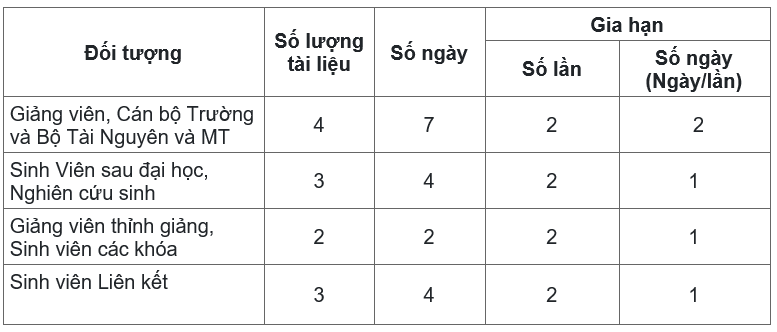
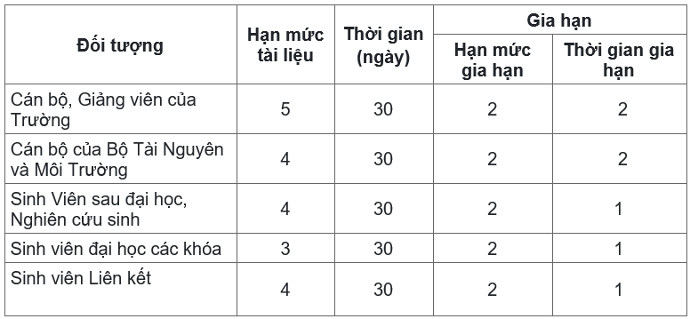

Đối tượng phục vụ
- Cán bộ, giảng viên, học viên, sinh viên các khóa của Đại Học Tài Nguyên và Môi Trường Hà Nội.
- Cán bộ nhân viên Bộ Tài Nguyên và Môi Trường và các đối tượng bạn đọc khác.
Thẻ Thư viện
Xuất trình thẻ hợp lệ cho cán bộ Thư viện khi vào phòng đọc. Thẻ hợp lệ bao gồm:
- Đối tượng sinh viên, học viên: Thẻ Sinh viên đồng thời là Thẻ Thư viện
- Đối tượng cán bộ của Đại Học Tài Nguyên và Môi Trường Hà Nội và Bộ Tài Nguyên và Môi Trường: Thẻ Cán bộ
- Đối tượng bạn đọc khác: Chứng minh nhân dân, Căn cước công dân hoặc các giấy tờ tùy thân khác kèm theo giấy giới thiệu của cơ quan chủ quản.
Không cho mượn hoặc dùng thẻ của người khác; quản lý tài khoản và mật khẩu, không cho mượn tài khoản thư viện số đã được cấp.
Thời gian mở cửa (áp dụng từ ngày 01/3/2022)
Từ Thứ Hai đến Thứ Sáu: Từ 8:00 đến 20:30 (thông tầm không nghỉ giữa giờ).
Thứ Bảy: Từ 9:00 đến 18:00 (thông tầm không nghỉ giữa giờ).
Thư viện sẽ dừng phục vụ bạn đọc 15 phút trước giờ đóng cửa để làm nghiệp vụ.
Quy Định Chung
1. Để vật dụng cá nhân vào tủ gửi đồ và tự bảo quản chìa khóa tủ trước khi vào Thư viện (Thư viện không chịu trách nhiệm về những mất mát xảy ra).
2. Không tự ý mang sách, tài liệu của Thư viện ra khỏi phòng đọc khi chưa làm thủ tục mượn mang về và chưa có sự đồng ý của cán bộ Thư viện; Không xáo trộn vị trí tài liệu trong Thư viện, không lấy nhiều hơn 02 cuốn sách, hoặc 02 tờ báo, hoặc 01 loại tạp chí cho mỗi lần đọc, đọc xong trả lại đúng nơi quy định rồi mới lấy tài liệu khác đọc tiếp.
3. Thực hiện và nhắc nhở người khác giữ gìn, bảo quản tài liệu trong Thư viện, kiểm tra tài liệu trước khi sử dụng, nếu tài liệu bị hư hỏng, rách, tẩy xóa… báo ngay cho cán bộ Thư viện; không ghi chép, cắt xén, tháo bìa, bóc nhãn, làm hỏng tài liệu.
4. Không giữ chỗ, bạn đọc khác có quyền sử dụng nếu chỗ ngồi trống quá 15 phút.
5. Có ý thức bảo vệ và giữ gìn tài sản, cơ sở vật chất của Thư viện, làm hư hại phải bồi thường.
6. Giữ gìn trật tự, vệ sinh, mỹ quan và an toàn trong Thư viện: đi nhẹ, nói khẽ, trao đổi thảo luận nhóm với âm lượng vừa đủ, hạn chế gây ảnh hưởng tới bạn đọc khác, không hút thuốc lá, không mang đồ ăn, không vứt rác, không viết vẽ lên tài liệu, mặt bàn và tường, không mang vào Thư viện chất gây cháy nổ, nguy hiểm theo quy định của pháp luật, trang phục lịch sự, gọn gàng, cư xử văn minh.
7. Chỉ sử dụng máy tính trong Thư viện cho mục đích học tập và nghiên cứu, không sử dụng để chơi game, chat, nghe nhạc, xem phim, không vào các trang mạng có nội dung không lành mạnh, không tự ý di dời, tháo lắp, cài đặt phần mềm hay thay đổi thiết bị máy tính.
8. Tuân thủ các quy định tại Luật sở hữu trí tuệ khi sử dụng tài liệu của Thư viện, các quy định, hướng dẫn khác của Thư viện và nội quy của Đại Học Tài Nguyên và Môi Trường Hà Nội.
9. Khi ra về cần xếp lại ghế ngay ngắn, đóng khít cửa tủ và trả chìa khóa tủ để đồ tại quầy cán bộ Thư viện, lấy lại Thẻ thư viện.
10. Cán bộ Thư viện có trách nhiệm hướng dẫn bạn đọc khai thác và sử dụng có hiệu quả nguồn tài nguyên Thư viện, đảm bảo phục vụ nhanh chóng, tận tình bạn đọc khi cần thiết, thái độ phục vụ nhiệt tình, hòa nhã, có quyền từ chối phục vụ khi bạn đọc vi phạm nội quy Thư viện, có tác phong làm việc khoa học, không ngừng nỗ lực nâng cao chất lượng phục vụ.
11. Thư viện sẽ lập biên bản những trường hợp vi phạm để có hình thức xử lý theo quy định.
Quy định mượn tài liệu
1. Tài liệu mượn đọc tại chỗ và tài liệu được mượn về:
1.1. Tài liệu mượn đọc tại chỗ:
Các tài liệu tra cứu như từ điển, bách khoa toàn thư; Luận văn; Khóa luận; Báo; Tạp chí; Báo cáo đề tài nghiên cứu khoa học (đối tượng là cán bộ, giảng viên) tại Phòng đọc tầng 1 Tòa B và toàn bộ sách, tài liệu trong Phòng .
1.2.Tài liệu được mượn về:
Bao gồm sách giáo trình, sách tham khảo trên kệ G, sách tham khảo trên các giá tại tủ 3.
Khi mượn tài liệu mang về, bạn đọc cần ghi đầy đủ, rõ ràng các nội dung trong Phiếu yêu cầu.
2. Chính sách cho mượn đối với tài liệu truyền thống và điện tử:
3. Chính sách cho mượn đối với tài liệu số:
*Lưu ý: Yêu cầu bạn đọc phải gia hạn trước ngày hết hạn: 1 ngày.
Bạn đọc kiểm tra kỹ trình trạng tài liệu và báo cho cán bộ Thư viện nếu tài liệu bị hư hỏng, rách, bẩn, tẩy xóa… trước khi làm thủ tục mượn; Trả sách phải đưa cho cán bộ Thư viện kiểm tra, nếu làm hư hỏng hoặc mất, bạn đọc phải bồi thường theo quy định.
4. Phạt quá hạn:
– Bạn đọc trả sách trễ hạn, phải nộp phạt 20.000 cuốn / 01 ngày/ 01 cuốn. Các ngày kế tiếp sẽ phạt lũy tiến 20.000đ/ 01 ngày/ 01 cuốn.
– Bạn đọc làm mất, rách sách và tài liệu sẽ phạt gấp 03 lần số tiền giá trị cuốn sách hay tài liệu đó, nếu làm bẩn, viết lên sách, tài liệu hoặc làm nhàu nát, rách sách, tài liệu sẽ bị phạt nguyên tiền giá trị cuốn sách, tài liệu hoặc mua mới lại để trả cho Thư viện.
– Bạn đọc sử dụng thẻ của người khác (hoặc cho người khác mượn thẻ) để sử dụng tài liệu của thư viện, nếu bị phát hiện, Thư viện sẽ khóa quyền sử dụng thẻ Thư viện của bạn đọc.
– Bạn đọc nếu vi phạm quy chế mượn 03 lần sẽ không được quyền mượn sách trong 01 tháng.
5. Thời gian tiến hành thủ tục mượn về:
– Các ngày trong tuần từ thứ 2 đến thứ 7:
Sáng: Từ 8h đến 12h30’.
Chiều: Từ 12h30’ đến 17h.
– Phân theo đối tượng mượn:
Sinh viên năm thứ 1: Thứ 2, thứ 4, thứ 6.
Sinh viên năm thứ 2, 3: Thứ 3, thứ 5, thứ 7.
Sinh viên năm cuối, học viên, cán bộ, giảng viên: từ thứ 2 đến thứ 7.
– Quầy Lưu hành sẽ ngưng phục vụ mượn trả tài liệu trước giờ Thư viện đóng cửa 30 phút.
6. Địa điểm mượn về:
Phòng đọc Thư Viện phòng B01 Tòa B.